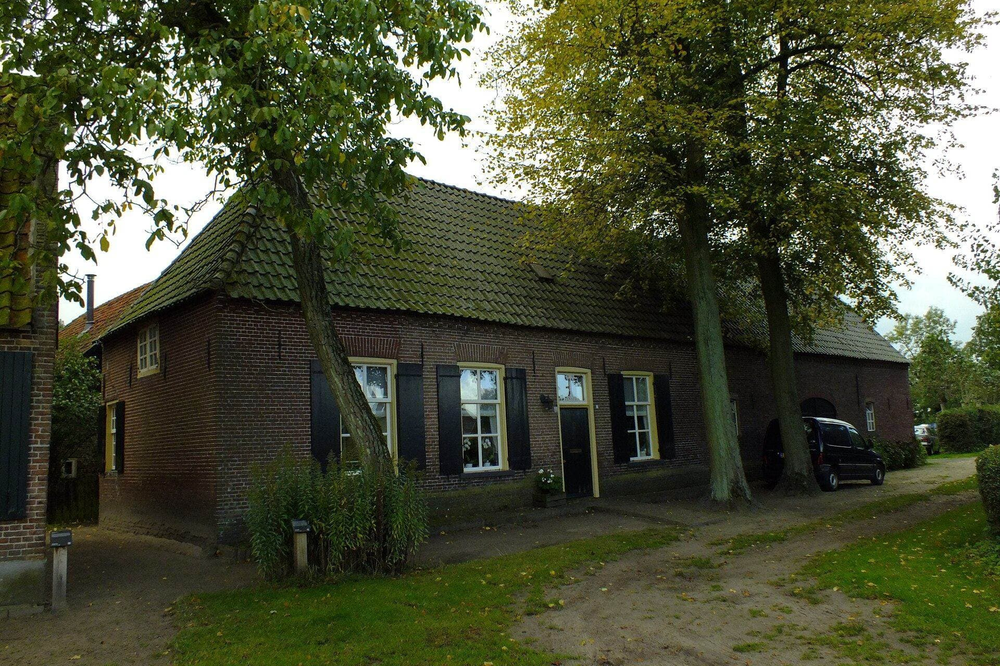
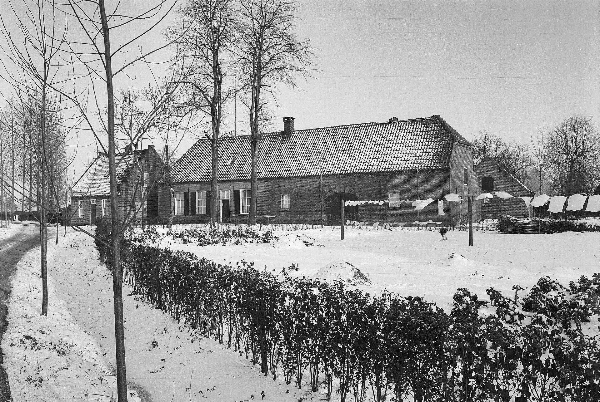
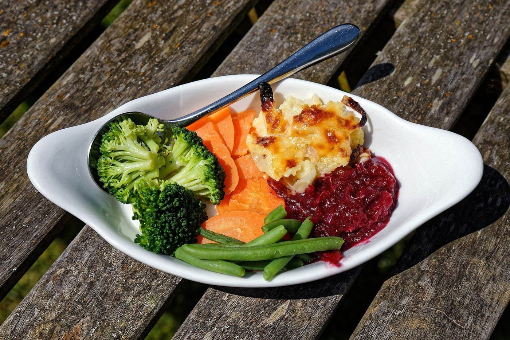
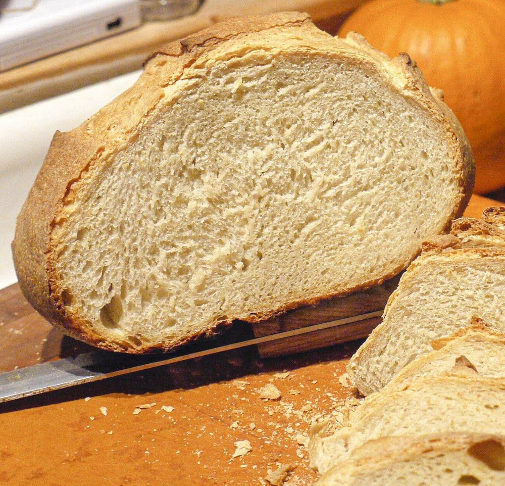
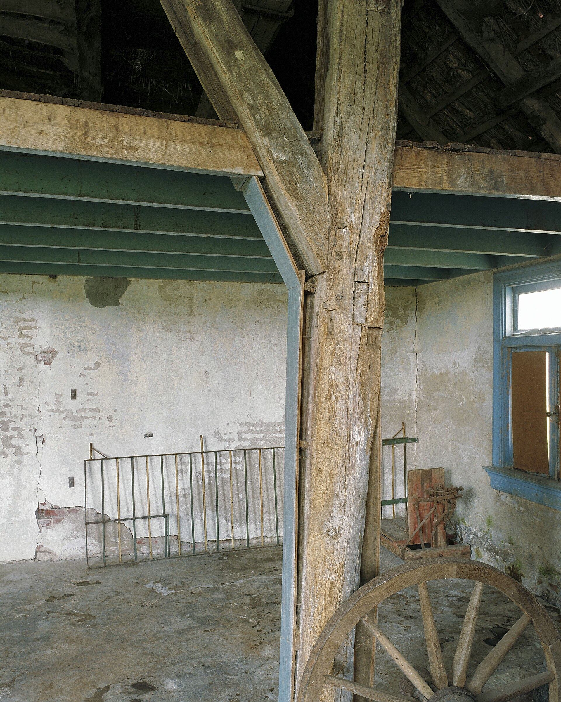

Van het erf
Groente uit onze eigen moestuin achter de schuur, eieren van de kippen op het erf. Wat we niet zelf telen halen we binnen tien kilometer.

Boerderijrestaurant · opening voorjaar 2027
Waar vroeger de oogst werd gedorst, schuif je straks aan bij lange tafels onder eikenhouten balken. Eten van het land, zonder poespas.

Ons verhaal
Bijna twee eeuwen lang woonden mens en dier hier onder één dak: aan de ene kant het woonhuis, aan de andere kant de stal en de deel. In die langgevel werd gekookt, gedorst, geboren en gefeest.
Wij hebben de muren laten staan zoals ze zijn. De gebinten zijn nog van de eerste boer, de luiken in de oude kleuren, de vloer van gebakken klinkers. Alleen de keuken is nieuw: daar gebeurt het nu.
Kom binnen, laarzen mogen aan.
De keuken
Groente uit onze eigen moestuin achter de schuur, eieren van de kippen op het erf. Wat we niet zelf telen halen we binnen tien kilometer.
Elke ochtend bakken we zuurdesembrood in de oude bakoven. Het vlees garen we langzaam boven het vuur, zoals dat altijd ging.
We schenken uit grote schalen. Je deelt, je proeft, je raakt aan de praat met de buren aan tafel. Zo eet je op een boerderij.


Het jaar rond
Sfeer



Groepen & feesten
Bruiloft, familiedag of bedrijfsdiner: tot 80 gasten aan één lange tafel. We stellen samen een boerenbuffet of shared dining menu samen.
Reserveren
We gaan in het voorjaar van 2027 open. Laat je gegevens achter en je hoort als eerste wanneer de deuren opengaan. De eerste tafels zijn voor jou.